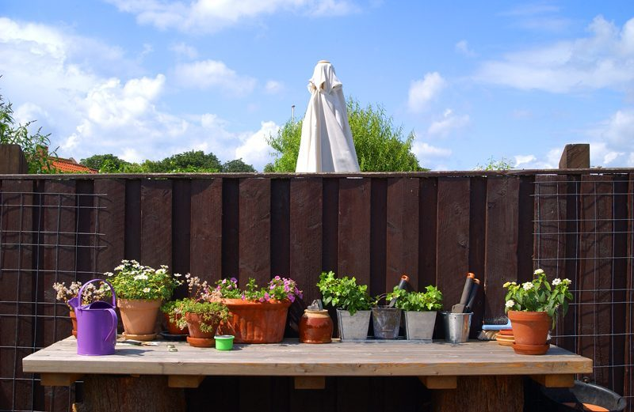
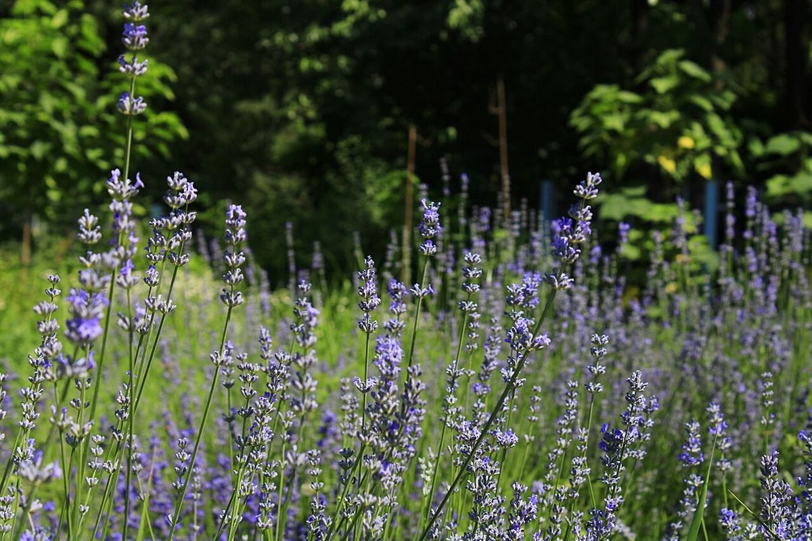

店のこと
店のこと
お店について確認できているのは、所在地とInstagramのアカウントだけです。
このページの「想像してみる」部分は、制作側が想像して書いたものです。お店の実際の様子・考え・提供内容とは関係がありません。
確認できていること
- 店名は「お庭カフェ ブリエ」、業種はカフェ
- 所在地は鳥取県境港市大正町126(〒684-0004)
- 電話番号はなし。連絡はInstagramから
- 営業時間・定休日・メニュー・価格・ご予約・駐車場は準備中

想像してみる
「お庭」という言葉から

店名の「お庭」から、窓の外や店先に緑のある空間を想像しました。実際にどんなお庭があるのか、どんな過ごし方ができるのかは分かりません。
もし緑のそばでゆっくりできる場所なら、鉢植えや葉ものがそばにある風景は似合うかもしれません。ここに載せた写真は、その想像を助けるためのイメージです。
「ブリエ」から連想した「光る」という言葉に合わせて、ページ全体を、光を受けた葉のような暗い緑と黄色い光の色にしています。これも制作側の好みで、お店の色ではありません。

次のひと言
詳しい内容は、Instagramで
最新の様子はお店のInstagramで確認できます。正式な公開時には、お店の考えや写真をお聞きして、このページに反映します。